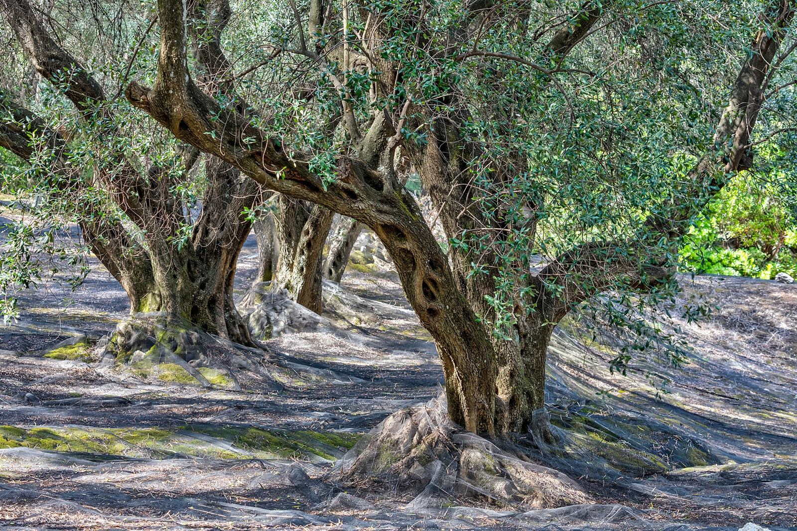
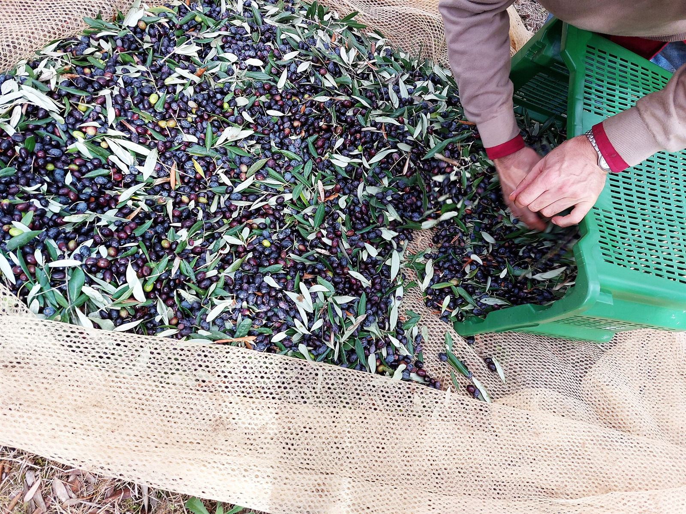
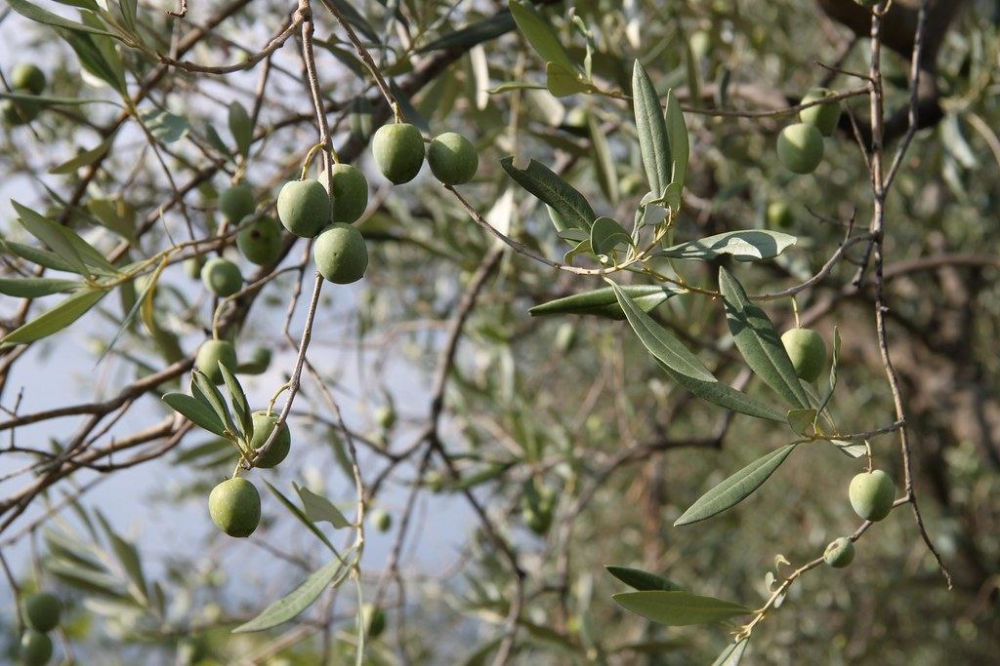

פרק ראשון · המסיק
היד קובעת את הטעם
מסוף אוקטובר ועד חנוכה, הרשתות נפרשות עם שחר. את הזנים העדינים אנחנו מוסקים במסרקות יד — עץ אחר עץ, בלי מכונות רעד שפוצעות את הפרי. זית חבול מתחמצן עוד לפני שהגיע למכבש, ולכן אצלנו הוא פשוט לא מגיע לשם.

בית בד משפחתי · הרי הגליל · מסיק תשפ"ו
בקצה מושב כרם בן זמרה, אלף ומאתיים עצי זית מחזיקים את המדרון. אנחנו קוטפים אותם ביד, כובשים אותם באותו הלילה, וסוגרים את העמק בתוך בקבוק.

הסיפור
סבא שלמה נטע את השורה הראשונה בחורף 1963. הוא לא קרא לזה כתית מעולה — הוא קרא לזה שמן.
שלושה דורות אחריו אנחנו עושים את אותו הדבר, רק בסבלנות ארוכה יותר: קטיף ידני בלבד, כבישה קרה בתוך שש שעות מהעץ, וחמיצות שלא עברה 0.3 אחוז באף מסיק בעשור האחרון. לא מערבבים זנים, לא קונים פרי מבחוץ, לא ממהרים לשום מקום. העצים היו כאן לפנינו — רובם יישארו כאן אחרינו.
פרק ראשון · המסיק
מסוף אוקטובר ועד חנוכה, הרשתות נפרשות עם שחר. את הזנים העדינים אנחנו מוסקים במסרקות יד — עץ אחר עץ, בלי מכונות רעד שפוצעות את הפרי. זית חבול מתחמצן עוד לפני שהגיע למכבש, ולכן אצלנו הוא פשוט לא מגיע לשם.

פרק שני · הכבישה
הפרי של הבוקר נכבש באותו הלילה. טחינה איטית, טמפרטורה שלא עולה על 27 מעלות, ואפס מגע עם חמצן עד הביקבוק. זה מה שהופך פרי טוב לשמן שמריחים בו את העמק — עשב קצור, ארטישוק, פלפל ירוק בסוף.

פרק שלישי · הביקבוק
השמן נח שלושה שבועות במכלי נירוסטה חשוכים, שוקע בשקט, ורק אז נמזג לזכוכית כהה. בלי סינון אגרסיבי, בלי חומרים משמרים. על כל בקבוק — תאריך המסיק והחלקה שממנה הגיע הפרי.

שלושה שמנים, שלוש חלקות. כולם מסיק תשפ"ו, כבישה קרה, חמיצות 0.3%.
הזן הוותיק של ההר. קטיף מוקדם, טעם של עשב קצור וארטישוק, חריפות נקייה שנשארת בגרון.
מתון ומעוגל. עגבנייה ירוקה, אגוז טרי, סיומת מתוקה — השמן שמתחילים איתו את הבוקר.
מהדורה מוגבלת מחלקת הקורונייקי — נמסק ירוק כולו, שבועיים לפני כולם. מריר, חריף, ירוק עמוק. 600 בקבוקים בשנה.
הזמנות בטלפון או בוואטסאפ · משלוח צונן עד הבית בכל הארץ
שולחן הטעימות פתוח בימי שישי, עשר עד שתיים. סיור בכרם ובבית הבד — בתיאום מראש, עד עשרה אורחים.
מושב כרם בן זמרה, הגליל העליון · 40 דקות מצפת
לתיאום ביקור · 04-698-2417